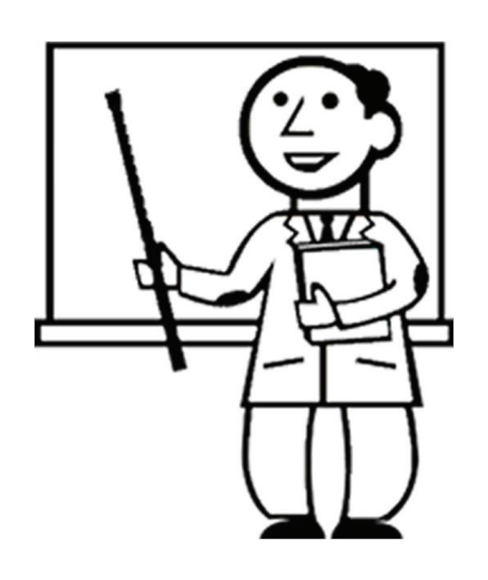

3.11 Lehramt
An der Uni Bayreuth gibt es je nach Fächerkombination zwei verschiedene Arten des Lehramtsstudiums: den sogenannten Modellstudiengang mit dem Zwischenziel “Bachelor of Science” und mit Möglichkeit zum “Master of Education” mit dem Staatsexamen als Abschluss und die klassische Lehramtsvariante hin zum Staatsexamen ohne Zwischenprüfung.
Zitat für Zwischendurch:
“Chromologe Homosomen”
Dozent aus der Genetik
Wenn ihr bei uns, also in der Fakultät 2 angekommen seid, dann studiert ihr Lehramt für Realschule oder Gymnasium mit einem der Fächer Chemie, Biologie oder Geografie.
Fast alle Lehramtskombinationen laufen im klassischen Muster ab. Dies bedeutet, beide Fächer sind gleich gewichtet mit dem Ziel Staatsexamen. Damit keine unbeantworteten Fragen auftauchen: Natürlich müssen auch die Modellstudiengangsteilnehmer das Staatsexamen in ihren jeweiligen Fächern sowie den Erziehungswissenschaften ablegen.

Die ersten Examen stehen meist nach dem 7. Semester (Realschule) bzw. dem 9. Semester (Gymnasium) an. Doch keine Angst!🤗 Jeder hat einen “Freischuss” und bis dahin ist noch viel Zeit um sich einen Kopf zu machen. Wichtig ist jetzt erst mal ein guter Start ins Semester und Unileben!🙂
Gerade die ersten Semester werden ihr fast den gleichen Stundenplan wie Fachstudenten haben. Der Wechsel ins Fach ist also fließend, eigene Fachveranstaltungen nur für Lehrämter wie bei einigen anderen Universitäten sind kaum vorgesehen. Eben dieser Fakt veranlasste die Universität zu dem schon angesprochenen “Modellstudiengang”.
Gymnasiales MINT-Lehramt
Hier wird die Fachkenntnis noch etwas weiter vertieft um einen “Bachelor of Science” im Erstfach ablegen zu können und so nach Ende von sechs Semestern die Freiheit zu haben, dieses Fach weiterzustudieren. Dieses System ist so gut wie einzigartig in Deutschland, die Vorteile liegen jedoch klar auf der Hand: Wenn ihr im Studium merkt, dass euch der Lehramtsbereich doch nicht so liegen sollte, ihr aber enorm Spaß (haha - okay, sagen wir Interesse😅) an eurem Erstfach habt, dann steht es euch offen, dieses Fach im Master zu intensivieren und das Lehramtsstudium an diesem Punkt zu beenden bzw. auszusetzen. Möglich wird dies durch eine geschickte Vertauschung der Fachveranstaltungen Erstfach/Zweitfach sowie der Erziehungswissenschaften. So werdet ihr in den ersten sechs Semestern euer erstes Fach viel intensiver behandeln, um so die Bachelor-Kriterien zu erfüllen. Das zweite Fach wird dann ebenso wie die Erziehungswissenschaften in den vier Semestern der Masterstudienzeit, also Semester 7-10, in den Fokus gerückt. Im 10. Semester habt ihr als Lehrämter die Möglichkeit eine Masterarbeit zu schreiben und so den Master of Education zu erreichen.
Alles, was ihr sonst noch wissen solltet
Doch genug zum eigentlichen System. Schließlich stehen ja auch noch die diversen Praktika an, welche ihr ziemlich bald (oder so wie der Autor sehr verspätet und deswegen arg in Zeitnot) in Angriff nehmen solltet.☝️ Dort werdet ihr dann auf die Kids losgelassen und dürft eigene Stunden halten - hier gilt: nehmt so viele ihr kriegen könnt, denn die ganze Theorie nützt ohne Praxis nichts. In den Stunden merkt ihr schnell, ob euch der Beruf Spaß macht und woran man alles denken muss und sollte, Sachen, die eben nicht in Büchern stehen, sondern die man nur in der Praxis lernt: Denn wer arbeitet, macht auch Fehler - und aus denen lernt man bekanntlich ja am besten.
Zitat für Zwischendurch:
“Hm, dann schneiden wir ihr halt mal die Eier ab!”
Biologie-Student beim Sezieren einer Ratte
Zuerst gäbe es da das “Orientierungspraktikum”, welches je nach Möglichkeit bereits vor Studienbeginn oder nach dem ersten Semester abgelegt werden sollte. Es umfasst drei Wochen Schulpraktikum - im Optimalfall zwei Wochen an der Schule für die ihr studiert (also Realschule oder Gymnasium) und eine Woche an einer alternativen Schulform (z.B. Grundschule).
Noch in den ersten sechs Semestern, dem sogenannten Grundstudium, wird das “schulpädagogisch-fachdidaktische Blockpraktikum” auf dich zukommen.
Manch einer wird sich vielleicht fragen, wieso ich in einer Erstizeitung bereits mit solch anstrengenden Dingen daherkomme - eigentlich wollen wir doch alle erstmal entspannt das erste Semester durchkriegen. Dies ist dem Umstand gezollt, dass es enorm wichtig ist, sich frühzeitig bei den Schulen um einen Praktikumsplatz zu bemühen. Der Autor fiel aus allen Wolken, als er erfuhr, dass Wartezeiten von einem halben Jahr oder mehr für einen Platz im Blockpraktikum an Bayreuther Gymnasien die völlige Norm sind.😐 Etwas besser soll die Situation auf dem Land sein. Nichtsdestotrotz, meldet euch frühzeitig bei den Schulen eurer Wahl, damit das Blockpraktikum (optimal jeweils 3 Wochen nach 2. und 3. Semester) gemäß eurer Planwünsche stattfinden kann.
Je nach Fächerkombination würde ich euch empfehlen, die jeweiligen Seiten für die Fachstudenten ebenfalls zu lesen. Ob Uni-Praktika für die Chemiker, Exkursionen für die Geografen oder Pflanzenkurse für die Biologen - wichtige Informationen, die auch für Lehramtsstudenten relevant sind, gibt es dort.
Des Weiteren kann ich euch raten, die Kurse der Erziehungswissenschaften frühzeitig zu belegen. So ist es möglich, euer EWS-Examen vorzuziehen und euch zusätzlichen Stress auf der Examens-Schlussgerade zu ersparen.
Ein letzter Tipp vor der Flut an Internet- links mit noch mehr Informationen: Gebt nicht auf! Am Anfang kann so einiges überfordernd und unlösbar scheinen (von der Suche nach den verstecktesten Hörsälen bis zu den Chemie-übungsblättern), aber mit der Zeit findet ihr euren Weg und auch den verborgensten Seminarraum.
Und nun zum Abschluss noch die Links zu den Didaktik-Lehrstühlen, die speziell für Lehrämtler relevant sind:
https://didaktikchemie.uni-bayreuth.de/de/index.html
https://www.bayceer.uni-bayreuth.de/didaktik-bio/
https://www.geographiedidaktik.uni-bayreuth.de/de/index.html
💕Viel Erfolg und gute Orientierung im Dschungel wünscht deine Fachschaft!💕